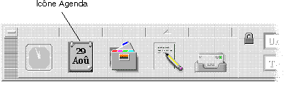

Utilisation de l'agenda
L'agenda est une application du Bureau permettant de planifier vos rendez-vous et activités, d'établir des rappels, de créer et d'imprimer des listes de rendez-vous et d'activités, de consulter les agendas d'autres utilisateurs et de planifier des réunions de groupes.
Planification d'un rendez-vous standard241 |
Options de rendez-vous242 |
Impression
d'agendas, de rendez-vous ou de listes d'activités248 |
Consultation des agendas sur un réseau250 |
Planification de rendez-vous sur d'autres agendas252 |
Lancement du programme Agenda
Pour lancer le programme Agenda, cliquez sur son icône dans le Tableau de bord.
Fenêtre principale de l'agenda
Les menus et la barre d'outils sont situés dans la partie supérieure de la fenêtre principale. La vue sélectionnée de l'agenda s'affiche dans la partie inférieure de la fenêtre.
Barre d'outils de l'agenda
La barre d'outils de l'agenda fournit des objets de commande permettant de naviguer rapidement à travers les agendas. Ces objets et leurs fonctions sont décrits dans le La vue de l'agenda correspond au jour, à la semaine, au mois ou à l'année affichés dans la fenêtre principale de l'agenda.
Vue quotidienne
La vue quotidienne affiche l'agenda dans la fenêtre avec les rendez-vous d'une journée. Elle comprend également un mini-agenda trimestriel qui affiche le mois en cours ainsi que le mois précédent et le mois suivant.
Cliquer sur un jour du mini-agenda trimestriel modifie la vue quotidienne et affiche le jour sélectionné. Cliquer sur un mois dans le mini-agenda modifie l'affichage de l'agenda de Vue quotidienne en vue mensuelle.
Vue hebdomadaire
La vue hebdomadaire affiche l'agenda dans la fenêtre avec les rendez-vous de la semaine. Le jour sélectionné est mis en évidence.
La vue hebdomadaire comprend également une grille hebdomadaire affichant les heures de rendez-vous planifiées (en grisé) et les heures disponibles (affichage normal).
Cliquer sur un jour de la vue hebdomadaire modifie la vue de l'agenda d'hebdomadaire en quotidienne.
Vue mensuelle
La vue mensuelle affiche l'agenda dans la fenêtre avec les rendez-vous du mois. Le jour sélectionné est mis en évidence.
Cliquer sur un jour de la vue mensuelle modifie la vue de l'agenda de mensuelle en quotidienne.
Vue annuelle
La vue annuelle affiche une année. Les rendez-vous ne sont pas indiqués. Cliquer sur un mois dans la vue annuelle modifie l'affichage de l'agenda en Vue mensuelle.
Rendez-vous
Utilisez l'Editeur de rendez-vous pour ajouter, modifier ou supprimer des rendez-vous de votre agenda.
Planification d'un rendez-vous standard
Dans la vue quotidienne, hebdomadaire ou mensuelle, affichez le jour pour lequel planifier un rendez-vous.
Cliquez deux fois sur ce jour pour ouvrir l'Editeur de rendez-vous.
Sélectionnez les heures de début et de fin.
La durée par défaut d'un rendez-vous est d'une heure. Si la durée du rendez-vous est plus courte ou plus longue, modifiez l'heure dans la zone Heure de fin.
Entrez la description du rendez-vous dans la zone Commentaires.
Vous pouvez, par exemple, préciser le lieu et l'objet du rendez-vous.
Pour entrer des paramètres supplémentaires concernant un rendez-vous, reportez-vous à la section Options de rendez-vous
Planifiez un rendez-vous standard, comme indiqué ci-dessus.
Cliquez sur le bouton Plus de l'Editeur de rendez-vous pour afficher des options supplémentaires.
Sélectionnez le rendez-vous approprié dans la liste de l'Editeur de rendez-vous.
Sélectionnez Bip, Clignotement, Message ou Courrier (ou une combinaison de ces options) pour définir les types de rappel souhaités.
S'il y a lieu, modifiez l'intervalle devant s'écouler entre chaque rappel ou le
Facultatif. Pour répéter le rendez-vous plusieurs fois, sélectionnez une option dans le menu Fréquence, puis une option dans le menu Pour.
Si l'intervalle de votre choix ne figure pas dans le menu Fréquence, sélectionnez Répétez tous les, et entrez l'intervalle souhaité en jours, semaines ou mois.
Sélectionnez une option dans le menu Confidentialité.
Heure et texte accessibles aux autres
Affiche toutes les informations relatives au rendez-vous.
Heure accessible aux autres
Affiche l'heure du rendez-vous, sans sa description.
Aucune donnée accessible aux autres
N'affiche aucune information.
Cliquez sur Modifier.
Si vous définissez les options de rendez-vous en même temps que vous fixez un rendez-vous standard, cliquez alors sur Insérer.
Si vous insérez successivement plusieurs rendez-vous, n'oubliez pas de cliquez sur Effacer après chaque insertion. Les options que vous ne souhaitez pas appliquer à l'ensemble des rendez-vous seront ainsi réinitialisées.
Cliquez sur Annuler pour fermer l'Editeur de rendez-vous.
Modification d'un rendez-vous
Cliquez sur l'icône Editeur de rendez-vous.
Sélectionnez le rendez-vous à modifier dans la liste.
Modifiez la date, les heures de début et de fin, la description, les rappels, la fréquence ou la confidentialité.
Cliquez sur Modifier.
Cliquez sur Annuler pour fermer l'Editeur de rendez-vous.
Suppression d'un rendez-vous
Cliquez sur l'icône Editeur de rendez-vous pour l'ouvrir.
Sélectionnez le rendez-vous dans la liste correspondante.
Cliquez sur Supprimer.
Cliquez sur Annuler pour fermer l'éditeur.
Recherche d'un rendez-vous
Sélectionnez Rechercher dans le menu Visualiser.
La boîte de dialogue Programme de recherche s'affiche.
Dans la zone Rechercher, entrez un mot clé pour la recherche, par exemple, conférence.
Lors de la recherche, la distinction majuscules/minuscules n'est pas respectée.
Par défaut, la recherche porte sur les six mois précédents et les six mois à venir. Pour modifier la plage de recherche, cliquez sur Tout rechercher pour lancer la recherche sur tout l'agenda (la procédure peut prendre du temps) ou modifiez les dates dans les zones Rechercher de.
Cliquez sur Rechercher.
Les rendez-vous qui comportent un texte correspondant à la recherche s'affichent dans la fenêtre Rechercher.
Sélectionnez le rendez-vous souhaité dans la liste.
Cliquez sur Afficher le rendez-vous pour afficher les informations qui y sont associées.
Cliquez sur Fermer pour fermer la boîte de dialogue Programme de recherche.
Visualisation d'une liste de rendez-vous
Cette section explique comment créer une liste de rendez-vous et l'afficher sur le système. Pour imprimer cette liste, reportez-vous à la section ”Impression d'agendas, de rendez-vous ou de listes d'activités.
Affichez la vue de l'agenda en fonction de la liste des rendez-vous à visualiser.
Sélectionnez Liste des rendez-vous dans le menu Visualiser.
Les rendez-vous sont listiés par ordre chronologique et sont accompagnés d'une date, d'une heure et d'une description. Par exemple, dans la vue hebdomadaire, la Liste des rendez-vous affiche les rendez-vous de la semaine.
Activités
Utilisez l'Editeur d'activités pour ajouter, mettre à jour ou supprimer des activités de votre agenda.
Ajout d'une activité
Cliquez sur l'icône Editeur d'activités.
Entrez ou modifiez l'échéance de l'activité dans la zone correspondante.
Entrez une description de l'activité dans la zone Commentaires.
Cliquez sur Insérer.
Cliquez sur Annuler pour fermer l'Editeur d'activités.
Modification d'une activité
Dans la vue quotidienne, hebdomadaire ou mensuelle, affichez le jour pour lequel modifier une activité.
Sélectionnez ce jour.
Cliquez sur l'icône Editeur d'activités.
Sélectionnez l'activité dans la liste.
Modifiez l'échéance ou la description de l'activité.
Éventuellement, sélectionnez Terminé pour modifier l'état de l'activité.
Cliquez sur Modifier.
Cliquez sur Annuler pour fermer l'Editeur d'activités.
Suppression d'une activité
Cliquez sur l'icône Editeur d'activités pour l'ouvrir.
Sélectionnez l'activité dans la liste.
Cliquez sur Supprimer.
Cliquez sur Annuler pour fermer l'éditeur.
Visualisation d'une liste des activités
Cette section explique comment créer une liste d'activités et l'afficher sur le système. Pour imprimer cette liste, reportez-vous à la section ”Impression d'agendas, de rendez-vous ou de listes d'activités.
Affichez la vue de l'agenda en fonction de la liste d'activités à visualiser.
Sélectionnez Liste des activités dans le menu Visualiser.

Les activités sont listées par ordre chronologique et sont accompagnées d'une case à cocher, d'une échéance et d'une description. Par exemple, dans le cas d'une vue quotidienne, la liste des activités affiche les activités du jour.
Fin d'une activité
L'agenda garde une trace de l'état des activités, qu'elles soient terminées ou en attente. Dans la boîte de dialogue Activités, vous pouvez sélectionner toutes les activités, uniquement celles qui sont terminées ou seulement celles qui sont en attente.
Si vous faites une liste des activités et souhaitez vérifier par la suite un élément de la liste, utilisez l'une des deux méthodes décrites ci-après.
Marquage d'un élément directement dans la liste d'activités
Sélectionnez Liste des activités dans le menu Visualiser.
Cliquez sur la case à cocher située en regarde de l'activité terminée.
Cliquez sur OK ou Appliquer.
L'activité est alors marquée comme terminée.
Pour revenir à l'état “En attente”, cliquez à nouveau sur la case à cocher et appliquez vos modifications.
Marquage d'une activité à l'aide de l'Editeur d'activités
Cliquez sur l'icône Editeur d'activités.
Sélectionnez l'activité dans la liste.
Cliquez sur Terminé pour indiquer la fin de l'activité.
Pour revenir à l'état “En attente” de l'activité, appuyez de nouveau sur Terminé.
Cliquez sur Modifier.
L'activité est alors marquée comme terminée.
Cliquez sur Annuler pour fermer l'Editeur d'activités.
Impression de vues, de rendez-vous et des listes d'activités
Vous pouvez imprimer chacune des quatre vues de l'Agenda, ainsi que les listes de rendez-vous et d'activités.
Pour imprimer les vues Jour, Semaine, Mois ou Année en cours
Affichez la vue de l'Agenda que vous souhaitez imprimer.
Choisissez Imprimer vue en cours sur le menu Fichier.
L'Agenda imprime la vue selon les options d'impression par défaut.
Pour modifier ces options d'impression, consultez la section
Impression d'une liste de rendez-vous ou d'activités
Affichez la vue d'Agenda contenant la journée pour laquelle imprimer une liste de rendez-vous ou d'activités.
Sélectionnez cette journée.
Choisissez Imprimer... sur le menu Fichier.
La boîte de dialogue Imprimer s'affiche.
Choisissez Liste de rendez-vous ou Liste d'activités sur le menu Type de rapport.
Cliquez sur Imprimer.
L'Agenda imprime la liste de rendez-vous ou d'activités en utilisant les options d'impression par défaut. Pour modifier les options d'impression, voir la section .
Impression avec des options spécifiques
Choisissez Imprimer... sur le menu Fichier.
La boîte de dialogue Imprimer apparaît.
Pour sélectionner une autre imprimante, tapez le nouveau nom d'imprimante dans le champ Nom de l'imprimante.
Pour produire plusieurs copies, tapez le nombre d'exemplaires désiré dans le champ Copies.
Pour imprimer dans un fichier, cliquez dans la case à cocher Fichier d'impression et spécifiez le nom complet et le chemin d'accès du fichier cible.
Choisissez la vue ou la liste à imprimer sur le menu Type de rapport. Vous pouvez choisir
Vue quotidienne,Vue hebdomadaire,Vue mensuelle,Vue annuelle,Liste des rendez-vousouListe des activités.Si nécessaire, spécifiez une plage horaire précise en modifiant les champs De et À.
Pour définir des options supplémentaires, cliquez sur le bouton Autres options.... La boîte de dialogue Options de l'Agenda apparaît, affichant les réglages actuels de l'imprimante.
Pour spécifier les marges de la sortie imprimée, tapez les valeurs désirées dans les champs Haut, Gauche, Droite et Bas. Vous pouvez spécifiez les marges en pouces (in, de l'anglais inches), en centimètres (cm) ou en pixels (pi). L'unité de mesure par défaut est le pouce (in). La valeur par défaut pour chaque type de marge esr 1 pouce (1 in = 2,54 cm).
Vos réglages de marge resteront en vigueur jusqu'à ce que vous les modifiiez. Ces réglages sont utilisés lorsque vous imprimez avec les options par défaut.
Pour inclure des en-têtes et/ou des bas de page sur la sortie imprimée, choisissez le type d'informations désirées pour les emplacements supérieur gauche, inférieur gauche, supérieur droit et/ou inférieur droit. Pour chaque emplacement, vous pouvez sélectionner :
Date, pour afficher la date actuelle.ID utilisateur, pour afficher votre identificateur d'utilisateur.Numéro de page, pour afficher les numéros de page.Type de rapport, pour afficher le type de rapport.Aucun, pour ne rien afficher. Il s'agit de la valeur par défaut initiale pour chaque emplacement.
Vos réglages d'en-tête et de bas de page restent en vigueur jusqu'à ce que vous les modifiiez. Ils sont utilisés lorsque vous imprimez avec les options par défaut.
Pour spécifier le niveau de sécurité des rendez-vous imprimés, sélectionnez une des options suivantes pour les rendez-vous:
Imprimer l'heure et le texteImprimer uniquement l'heureNe rien imprimer
Le niveau de sécurité spécifié pour vos rendez-vous reste en vigueur jusqu'à ce que vous le modifiiez. Il est utilisé lorsque vous imprimez avec les options par défaut.
Après avoir modifié les réglages de l'imprimante, cliquez sur OK pour valider vos sélections en tant que nouvelles valeurs par défaut et retourner à la boîte de dialogue Imprimer. Appliquer valide les nouvelles valeurs par défaut, mais vous permet de rester dans cette boîte de dialogue. Rétablir restaure le paramètre précédent de chaque option. Annuler annule les modifications et vous renvoie à la boîte de dialogue Imprimer.
Pour spécifier des options spécifiques à une imprimante, cliquez sur le bouton Configurer... de la boîte de dialogue Imprimer. La fenêtre Configuration de l'impression apparaît, vous permettant d'accéder à la fois aux options de l'imprimante et à celles du travail d'impression.
La boîte de dialogue des options de l'imprimante permet le contrôle de paramètres tels que la taille de la page (formal Légal, Lettre, etc.), l'impression recto-verso ou recto uniquement, ainsi que la source de papier à utiliser.
Bien qu'il soit possible de modifier l'orientation de la page, l'orientation effectivement utilisée (Portrait ou Paysage) est déterminée par le type de rapport sélectionné.
La boîte de dialogue Options du travail d'impression vous permet de spécifier si vous souhaitez recevoir une confirmation par messagerie électronique lors de la réussite de l'exécution de votre travail d'impression et, le cas échéant, le texte à imprimer sur la page de tête. Vous pouvez également spécifier des options de commande d'impression dans le champ Options de commande d'impression.
Lorsque vous en avez terminé avec la fenêtre Configuration de l'impression, cliquez sur OK pour valider vos modifications et retourner à la boîte de dialogue Imprimer.
Les paramètres de Configuration de l'impression restent valides jusqu'à ce que vous les modifiiez. Ils sont utilisés lorsque vous imprimez avec des options par défaut.
Pour envoyer la vue ou liste sélectionnée à l'imprimante à partir de la boîte de dialogue Imprimer, cliquez sur Imprimer.
Cliquez sur Fermer pour refermer la boîte de dialogue Imprimer.
Consultation des agendas sur un réseau
Si vous connaissez le nom des autres agendas d'un réseau, vous pouvez utiliser le programme pour les parcourir. Un exemple concret consiste à planifier une réunion ou un rendez-vous pour plusieurs personnes. Vous pouvez utiliser l'agenda pour connaître les disponibilités de chacun.
Pour parcourir d'autres agendas et éventuellement ajouter un rendez-vous, vous avez besoin:
du nom des agendas dans le format
kent@dailyplanetd'ajouter des agendas à la liste Parcourir
de déterminer si vous avez accès à d'autres agendas
Par défaut, le programme Agenda accorde à tous les utilisateurs des droits de consultation. Seul le propriétaire de l'agenda dispose de droits d'écriture et de suppression. Pour modifier l'accès et les droits, reportez-vous à la section Accès au nom d'autres agendas
Le programme Agenda ne vous permet pas encore de rechercher le nom d'autres agendas.
Prenez contact avec les autres utilisateurs et demandez-leur de vous donner les informations relatives à leur nom_agenda@nom_hôte.
Ajout ou suppression d'agendas dans la liste Parcourir
Pour ajouter:
Sélectionnez l'Editeur de menus dans le menu Parcourir.
Entrez le nom_agenda@nom_hôte dans la zone Nom d'utilisateur.
Cliquez sur Ajouter un nom.
Cliquez sur OK pour ajouter l'agenda à la liste Parcourir et fermer la boîte de dialogue Editeur de menus.
Pour supprimer:
Sélectionnez le nom d'un agenda dans la liste Parcourir.
Cliquez sur Supprimer un nom.
Cliquez sur OK pour supprimer l'agenda de la liste Parcourir et fermer la boîte de dialogue Editeur de menus.
Pour supprimer vos modifications et laisser la boîte de dialogue affichée, cliquez sur Restaurer avant de cliquer sur Appliquer.
Pour enregistrer vos modifications et fermer la boîte de dialogue, cliquez sur OK.
Pour enregistrer vos modifications et laisser la boîte de dialogue affichée, cliquez sur Appliquer.
Pour supprimer vos modifications et fermer la boîte de dialogue, cliquez sur Annuler.
Accès à d'autres agendas
Sélectionnez Compar. agendas dans le menu Parcourir.
Sélectionnez les entrées de la liste Parcourir dont vous souhaitez vérifier l'accès.
Cliquez sur Planifier pour ouvrir l'Editeur de réunions.
Consultez la liste des utilisateurs autorisés.
La liste des utilisateurs autorisés répertorie les agendas sélectionnés dans la boîte de dialogue Compar. agendas.
Un ”O” dans la colonne Accès indique que vous avez accès en écriture à l'agenda sélectionné. Un “N” indique que vous n'y avez pas accès.
Pour ajouter des rendez-vous ou des activités dans d'autres agendas, demandez aux utilisateurs de vous accorder l'accès en écriture à leur agenda. Pour savoir comment accorder ou interdire l'accès de votre agenda à d'autres utilisateurs, reportez-vous à la section ”Modification de l'accès et des droits”, page 259.
Planification de rendez-vous sur d'autres agendas
Lorsque vous avez trouvé les disponibilités sur les autres agendas et que vous avez le droit d'y ajouter des rendez-vous, vous pouvez planifier une réunion.
Utilisez l'Editeur de réunions pour insérer, modifier ou supprimer des rendez-vous de votre agenda et de celui d'un autre utilisateur. Si vous n'avez pas accès en écriture à d'autres agendas, vous pouvez utiliser l'Editeur de réunions pour envoyer des messages concernant les réunions à d'autres utilisateurs.
Planification d'une réunion
Sélectionnez Compar. agendas dans le menu Parcourir.
Cliquez sur une ou plusieurs entrées de la liste Parcourir.
Notez que la grille fait se chevaucher les agendas, que les plages horaires occupées sont grisées et les plages horaires disponibles ne le sont pas.
Cliquez sur une plage horaire non grisée de la grille.
Cliquez sur Planifier.
L'Editeur de réunions s'affiche. Les zones Date, Heure et Courrier sont automatiquement remplies.
Entrez (ou modifiez) l'heure de début de la réunion dans la zone Début.
Entrez (ou modifiez) l'heure de fin de la réunion dans la zone Fin.
Entrez la description de la réunion (lieu ou objet) dans la zone Commentaires.
Cliquez sur Plus.
Sélectionnez la fréquence et la durée de la réunion.
Cliquez sur Insérer pour ajouter la réunion aux agendas sélectionnés.
Si vous n'avez pas accès en écriture à tous les agendas, vous pouvez envoyer un message aux participants pour les prévenir de la réunion. Reportez-vous à la section Envoi de rappels aux participants à l'aide de l'agenda
Une fois la réunion planifiée (date, heures de début et de fin, description, fréquence), vous pouvez envoyer un rappel aux participants. Pour ce faire:
Cliquez sur Plus dans l'Editeur de réunions pour afficher des options supplémentaires.
Cliquez sur Courrier.
L'Editeur de réunions affiche une fenêtre de composition contenant un message relatif à la réunion. Ce message est adressé aux utilisateurs sélectionnés et rempli automatiquement (date, heures de début et de fin de la réunion).
Cliquez sur Transmettre à dans la fenêtre de composition.
Un rappel est envoyé aux utilisateurs sélectionnés.
Les destinataires d'un rappel formaté à l'aide de l'agenda peuvent faire glisser ce message de la fenêtre Courrier vers leur agenda afin de planifier la réunion automatiquement.
Création d'un message de rendez-vous à l'aide du Programme courrier
Lancez le Programme courrier.
Ouvrez une fenêtre de composition ou créez un message vide.
Ajoutez une section au message ayant exactement le format suivant. Remplacez
<tab> par un caractère de tabulation,<blank line> par une ligne blanche et remplacez les informations en italiques par les données réelles.<tab>** Rendez-vous ** <blank line> <tab>Date:<tab> Par exemple:
** Rendez-vous ** Date: 22/11/94 Début: 10:00 am Fin: 11:00 am Commentaires: Réunion du personnel Salle de conférences Monet Ajoutez du texte dans le message.
Adressez le message au destinataire et incluez l'objet du message.
Envoyez le message.
Pour connaître l'utilisation du Programme courrier, reportez-vous au chapitre chapitre 8, ”Utilisation du Programme courrier.
Déplacement d'un rendez-vous d'une application vers l'agenda
Vous pouvez déplacer une icône de rendez-vous du Programme courrier ou du Gestionnaire de fichiers et, éventuellement d'autres applications, vers l'agenda pour planifier le rendez-vous.
À partir du Programme courrier
Dans la liste des en-têtes de message du Programme courrier, cliquez sur l'en-tête contenant le rendez-vous formaté.
Faites glisser l'en-tête vers l'agenda et posez-le.
Le pointeur se transforme en icône représentant le fichier en cours de déplacement.
L'agenda planifie le rendez-vous et affiche un message dans la zone correspondante indiquant que le rendez-vous a été planifié.
Affichez la vue de l'agenda contenant le jour pour lequel le rendez-vous est prévu.
Cliquez deux fois sur ce jour pour ouvrir l'Editeur de rendez-vous.
Vérifiez que le rendez-vous est prévu pour le jour et l'heure appropriés.
Pour plus de détails sur l'utilisation du Programme courrier, reportez-vous au chapitre 8, ”Utilisation du Programme courrier.
À partir du Gestionnaire de fichiers
Si vous disposez d'un fichier contenant un rendez-vous formaté :
Dans une fenêtre ouverte du Gestionnaire de fichiers, accédez à un dossier contenant un fichier avec un rendez-vous formaté.
Lorsque ce rendez-vous et l'agenda sont affichés sur l'écran, faites glisser le fichier de rendez-vous formaté vers l'agenda et posez-le.
L'agenda planifie ce rendez-vous.
Cliquez deux fois sur ce jour pour ouvrir l'Editeur de rendez-vous.
Vérifiez que le rendez-vous est prévu pour le jour et l'heure appropriés.
Pour plus de détails sur le Gestionnaire de fichiers, reportez-vous
au chapitre 5, ”Gestionnaire de fichiers
Déplacement d'un rendez-vous de l'agenda vers une autre application
À partir de l'agenda, vous pouvez faire glisser une icône de rendez-vous vers le Programme courrier pour l'envoyer, ou vers le Gestionnaire de fichiers pour le sauvegarder dans le système de fichiers.
Vers le Programme courrier
Utilisez l'Editeur de rendez-vous pour créer un rendez-vous, mais ne cliquez pas sur Insérer.
Lancez le Programme courrier et choisissez Nouveau message dans le menu Composer.
Assurez-vous que les fenêtres de l'Editeur de rendez-vous et de composition du Programme courrier apparaissent toutes les deux à l'écran.
Faites glisser l'icône Faire glisser rendez-vous de l'Editeur de rendez-vous et posez-la sur la liste des pièces jointes du Programme courrier.
Le pointeur se transforme en icône de rendez-vous représentant le fichier en cours de déplacement.
Le Programme courrier affiche le rendez-vous sous forme de fichier texte dans la liste des pièces jointes.
Composez et attribuez une adresse à votre message et envoyez-le.
Pour plus de détails sur l'utilisation du Programme courrier, reportez-vous au chapitre 8, ”Utilisation du Programme courrier.
Vers le Gestionnaire de fichiers
Utilisez l'Editeur de rendez-vous pour créer un rendez-vous, mais ne cliquez pas sur Insérer.
Dans une fenêtre ouverte du Gestionnaire de fichiers, accédez au dossier dans lequel sauvegarder le rendez-vous sous forme de fichier.
Lorsque les fenêtres du Gestionnaire de fichiers et de l'Editeur de rendez-vous sont affichées à l'écran, faites glisser l'icône Faire glisser rendez-vous et posez-la sur la fenêtre du Gestionnaire de fichiers.
Le rendez-vous est sauvegardé dans un fichier texte dans le dossier où vous l'avez posé.
Pour plus de détails sur le Gestionnaire de fichiers, reportez-vous
au chapitre 5, ”Gestionnaire de fichiers
Personnalisation de l'agenda
L'agenda propose des boîtes de dialogue Options qui permettent de changer les paramètres des rendez-vous à venir. Pour modifier les paramètres d'un seul rendez-vous, reportez-vous à la section ”Options de rendez-vous”, page 242.
Modification des valeurs par défaut de l'Editeur de rendez-vous
Sélectionnez Options dans le menu Fichier.
La boîte de dialogue Options de l'agenda s'affiche.
Sélectionnez Paramètres par défaut de l'Editeur dans le menu Catégorie.
Facultatif. Modifiez la durée du rendez-vous dans la zone correspondante.
Facultatif. Modifiez l'heure de début du rendez-vous dans la zone Début.
Sélectionnez Bip, Clignotement, Message ou Courrier.
Bip
Le système émet un signal sonore.
Clignotement
L'agenda clignote.
Message
Une boîte de dialogue de rappel s'affiche.
Courrier
Un message électronique est envoyé.
S'il y a lieu, modifiez les intervalles de temps par défaut.
Les zones d'intervalles de temps sont actives pour chaque rappel sélectionné. Elles précisent le moment précédant un rendez-vous où un rappel sera émis.
Sélectionnez une option de confidentialité dans le menu correspondant. Heure accessible aux autres
Paramètre par défaut – affiche uniquement l'heure d'un rendez-vous pour signaler aux autres utiisateurs que vous n'êtes pas disponible.
Heure et texte accessibles aux autres
Affiche l'heure et la description d'un rendez-vous de l'agenda.
Ne rien afficher
Pour des raisons de confidentialité, aucune information relative à un rendez-vous de l'agenda n'est affichée.
Cliquez sur Appliquer pour appliquer les nouveaux paramètres par défaut aux futurs rendez-vous.
Cliquez sur Annuler pour fermer la boîte de dialogue Options de l'agenda.
Modification des paramètres d'affichage
Vous pouvez personnaliser l'affichage de nombreux éléments de l'agenda:
l'agenda initial,
les limites horaires,
la vue par défaut.
Configuration de la vue initiale de l'agenda
Il est possible d'afficher initialement un agenda autre que le vôtre.
Sélectionnez Options dans le menu Fichier.
La boîte de dialogue Options de l'agenda s'affiche.
Sélectionnez Afficher les paramètres dans le menu Catégorie.
Cliquez deux fois sur la zone Vue initiale de l'agenda et entrez le nom_agenda@nom_hôte correspondant à l'agenda à visualiser à chaque lancement du programme Agenda.
Cliquez sur Appliquer.
Cliquez sur Annuler pour fermer la boîte de dialogue Options.
Configuration des limites horaires sur les vues quotidienne et hebdomadaire
Les limites horaires sont les heures minimale et maximale que vous souhaitez afficher dans l'agenda.
Sélectionnez Options dans le menu Fichier.
Sélectionnez Afficher les paramètres dans le menu Catégorie.
Déplacez les règles Début et Fin afin de déterminer les heures minimale et maximale à appliquer à l'agenda.
Sélectionnez un affichage au format 12 heures ou 24 heures.
Cliquez sur Appliquer.
Cliquez sur Annuler.
Vue de l'agenda par défaut
La vue de l'agenda par défaut est affichée chaque fois que le programme est lancé. La vue initiale par défaut est mensuelle. Vous pouvez la modifier par celle que vous utilisez le plus souvent, par exemple Vue hebdomadaire.
Sélectionnez Options dans le menu Fichier.
Sélectionnez Afficher les paramètres dans le menu Catégorie.
Sélectionnez Jour, Semaine, Mois ou Année comme vue par défaut.
Cliquez sur Appliquer.
Cliquez sur Annuler.
Modification de l'accès et des droits
Vous pouvez configurer l'accès à votre agenda afin de contrôler les opérations que les autres utilisateurs peuvent y effectuer. Pour déterminer si vous avez accès à d'autres agendas, reportez-vous à la section Autorisation d'accès à votre agenda
Sélectionnez Options dans le menu Fichier.
Sélectionnez Listes et autorisations dans le menu Catégorie.
La boîte de dialogue correspondante s'affiche.
Selon la version de votre agenda, la boîte de dialogue Listes et autorisations peut différer de celle de la Sélectionnez l'autorisation de Parcourir, Insérer ou Supprimer.
Parcourir
Il s'agit de la valeur par défaut. Permet aux autres utilisateurs de voir les informations figurant sur votre agenda.
Insérer
Les autres utilisateurs peuvent ajouter des rendez-vous ou activités à votre agenda.
Supprimer
Les autres utilisateurs peuvent supprimer des rendez-vous ou des activités de votre agenda.
Cliquez sur Ajouter un nom pour ajouter l'agenda à la liste d'accès, avec les utilisateurs autorisés que vous avez choisis.
Pour supprimer vos modifications et laisser la boîte de dialogue affichée, cliquez sur Restaurer avant de cliquer sur Appliquer.
Pour enregistrer vos modifications et fermer la boîte de dialogue, cliquez sur OK.
Pour valider vos modifications et laisser la boîte de dialogue affichée, cliquez sur Appliquer.
Pour supprimer vos modifications et fermer la boîte de dialogue, cliquez sur Annuler.
La sauvegarde des modifications applique les autorisations sélectionnées à l'agenda spécifié.
Si la boîte de dialogue Listes des autorisations ressemble à
celle de la Figure 11‐2
Dans la zone Nom utilisateur, entrez le
Par défaut, seul un accès en lecture aux rendez-vous publics est autorisé.
Sélectionnez Visualiser, Insérer ou Modifier les droits d'accès.
Les droits d'accès permettent de contrôler les actions des utilisateurs sur votre agenda. Vous pouvez sélectionner plusieurs droits d'accès.
Sélectionnez des droits d'accès de type Public, Semi-privé ou Privé.
Les droits d'accès permettent de contrôler les types de rendez-vous que les autres utilisateurs peuvent visualiser.
Public
Permet d'afficher l'heure et la description des rendez-vous portant l'indication Heure et texte accessibles aux autres.
Semi-privé
Permet d'afficher l'heure et la description des rendez-vous portant l'indication Heure accessible aux autres.
Privé
Permet d'afficher l'heure et la description des rendez-vous portant l'indication Aucune donnée accessible aux autres.
Cliquez sur Ajouter pour ajouter l'agenda à la liste d'accès avec les droits choisis.
Pour supprimer vos modifications et laisser la boîte de dialogue affichée, cliquez sur Restaurer avant de cliquer sur Appliquer.
Pour enregistrer vos modifications et fermer la boîte de dialogue, cliquez sur OK.
Pour valider vos modifications et laisser la boîte de dialogue affichée, cliquez sur Appliquer.
Pour supprimer vos modifications et fermer la boîte de dialogue, cliquez sur Annuler.
La sauvegarde des modifications applique l'accès et les droits sélectionnés à l'agenda spécifié.
Interdiction d'accès à votre agenda
Sélectionnez Options sur le menu Fichier.
Sélectionnez Listes et autorisations dans le menu Catégorie.
Sélectionnez l'agenda dont vous souhaitez interdire l'accès dans la liste correspondante.
Cliquez sur Supprimer nom (ou Supprimer) pour retirer l'utilisateur de la liste.
Pour supprimer vos modifications et laisser la boîte de dialogue affichée, cliquez sur Restaurer avant de cliquer sur Appliquer.
Pour enregistrer vos modifications et fermer la boîte de dialogue, cliquez sur OK.
Pour validder vos modifications et laisser la boîte de dialogue affichée, cliquez sur Appliquer.
Pour annuler les modifications et fermer la boîte de dialogue, cliquez sur Annuler.
L'enregistrement des modifications supprime l'accès à l'agenda spécifié.
Modification du format de date
Sélectionnez Options dans le menu Fichier.
Sélectionnez Format de date dans le menu Catégorie.
Le format de date par défaut de l'agenda est MM/JJ/AA.
Sélectionnez l'ordre des éléments voulu.
Sélectionnez un séparateur.
Pour supprimer vos modifications et laisser la boîte de dialogue affichée, cliquez sur Restaurer avant de cliquer sur Appliquer.
Pour enregistrer vos modifications et fermer la boîte de dialogue, cliquez sur OK.
Pour valider les modifications et laisser la boîte de dialogue affichée, cliquez sur Appliquer.
Pour supprimer vos modifications et fermer la boîte de dialogue, cliquez sur Annuler.
Modification du fuseau horaire par défaut
Vous pouvez configurer l'agenda pour visualiser vos rendez-vous ou ceux d'un autre agenda dans un fuseau horaire différent.
Sélectionnez Fuseau horaire dans le menu Visualiser.
Sélectionnez Heure GMT.
Dans la zone Heures, indiquez le nombre d'heures avant ou après l'heure du méridien de Greenwich (GMT), que vous souhaitez définir pour votre agenda.
Par exemple, pour régler votre agenda sur l'heure du Pacifique, sélectionnez GMT+8 heures. Pour le régler sur l'heure de la Finlande, sélectionnez GMT-2 heures. Pour le régler sur l'heure du Japon, sélectionnez GMT-9 heures. Tenez compte du décalage d'une heure entre l'heure d'été et l'heure d'hiver.
Pour rétablir l'heure du fuseau horaire local, sélectionnez Heure locale dans la boîte de dialogue Fuseau horaire.
Cliquez sur OK pour appliquer vos modifications et fermer la boîte de dialogue.
Accès à l'agenda par l'intermédiaire de la ligne de commande
L'agenda offre la possibilité de rechercher, insérer et supprimer des rendez-vous à partir de la ligne de commande d'un émulateur de terminal.
dtcm_editor
Utilisez l'Editeur de rendez-vous autonome pour créer un rendez-vous formaté par l'agenda et l'enregistrer dans un fichier.
Entrez dtcm_editor
L'Editeur de rendez-vous autonome s'affiche.
Entrez une date dans la zone Date.
N'oubliez pas d'utiliser le format de date défini dans la boîte de dialogue Format de date.
Sélectionnez les heures de début et de fin du rendez-vous.
Entrez une description du rendez-vous dans la zone Commentaires.
Sélectionnez la fréquence du rendez-vous dans la zone correspondante.
Cliquez sur Sauvegarder pour enregistrer le contenu du rendez-vous dans le fichier indiqué sur la ligne de commande.
dtcm_lookup
Utilisez dtcm_lookup pour visualiser les rendez-vous
de votre agenda.
Entrez
dtcm_lookupsur la ligne de commande pour visualiser les rendez-vous de la vue par défaut. Par exemple, si Quotidienne est la vue par défaut, les rendez-vous du jour en cours s'affichent.system% dtcm_lookup Rendez-vous du vendredi 23 décembre 1995: 1) Noël 2) 2:30pm-3:30pm Réunion du personnel 3) 6:00pm Achat cadeaux 4) 7:15pm-10:00pm Répétition choeur messe de NoëlPour sélectionner l'agenda, la date ou la plage horaire dans lesquels consulter les rendez-vous, utilisez la syntaxe suivante:
dtcm_lookup [-c] [-d] [-v]Par exemple:
system% dtcm_lookup -c hamilton@artist -d 12/22/94 -v day Rendez-vous du jeudi 22 décembre 1995: 1) 9:00am-10:00am Réunion projet 2) 1:30pm-2:00pm Test
dtcm_insert
Utilisez dtcm_insert sur la ligne de commande pour
insérer des rendez-vous dans votre agenda. Par exemple:
dtcm (Agenda) imprime automatiquement les rendez-vous
planifiés. Vous pouvez ainsi constater que le nouveau rendez-vous a
été inséré.
dtcm_delete
Utilisez dtcm_delete sur la ligne de commande pour supprimer des rendez-vous de votre agenda. Par exemple:
Lorsque vous ne voulez plus supprimer d'autres éléments, appuyez sur Ctrl+C.
dtcm
Utilisez dtcm pour lancer l'agenda à partir
de la ligne de commande. Par exemple: